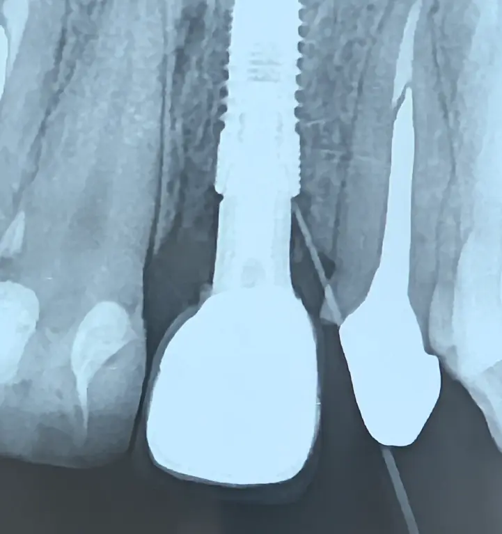

۱) داستان بالینی
بیمار جوانی با یک ایمپلنت در دندان یکِ سمت چپ مراجعه کرد؛ قرار بود درمان زیبایی در ناحیهٔ قدامی انجام شود.
روکش ایمپلنت از نظر زیبایی مشکل داشت و تصمیم به تعویض آن هم گرفته شد؛ اما وجود آبسه در ناحیهٔ ایمپلنت مسیر درمان را پیچیده کرد.
جراح اولیه ناحیه ی ایمپلنت را باز کرد، ناحیه را تمیز کرد و پودر استخوان قرار داد؛ اما آبسه برگشت.
از دید جراح، درمان قطعی خارجکردن ایمپلنت بود.
ولی هیچ جراحی حاضر نبود در یک بیمار جوان و ناحیهٔ کاملاً زیبایی، ریسک آسیب به تابل باکال را بپذیرد.

در نهایت، با تریس مسیر آبسه مشخص شد که منشأ آبسه کانکشن ایمپلنت است؛ نه استخوان، نه فیکسچر. و در نتیجه نیازی به خارجسازی ایمپلنت نبود.
۲) نقطهٔ چرخش درمان
حالا باید روشن میشد چرا ناحیهٔ کانکشن منشأ آبسه است.
حدس اولیه: اباتمنت نامناسب؟
در جلسهٔ قالبگیری تصمیم گرفته شد:
- ابتدا روکش و اباتمنت تعویض شوند
- اگر با روکش و اباتمنت جدید مشکل برطرف شد، درمان ادامه یابد
برای دسترسی به پیچ ایمپلنت، از پشت روکش ورودی ایجاد شد و روکش خارج شد.

۳) نکتهٔ کلیدی که همهچیز را روشن کرد
پس از خارجکردن روکش مشخص شد:
سمان باقیمانده در داخل کانکشن، عامل التهاب مزمن و آبسه بوده است.
این نکات فوقالعاده مهم است:
- آبسه را حتماً تریس کنید.
- خطر سمان باقیمانده را جدی بگیرید.
۴) جمعبندی درمان
کل ناحیهٔ کانکشن و اطراف کاملاً تمیز شد.
ناحیهٔ زیبایی آمادهسازی شد.
اباتمنت و روکش قبلی شستشو و ضدعفونی شدند.
همان روکش قبلی بهعنوان روکش موقت دوباره در محل قرار گرفت.
با حذف منبع اصلی التهاب (سمان)، آبسه بدون نیاز به جراحی یا خارجسازی، برطرف خواهد شد.